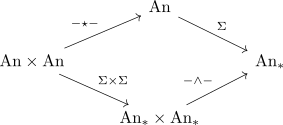
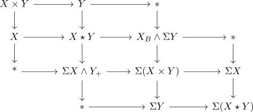
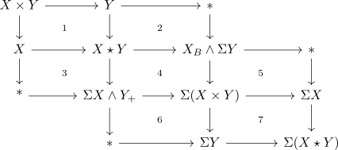
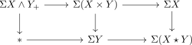
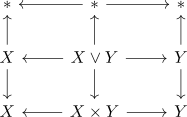
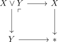
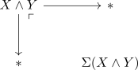

suspension of the join and smash product commute for spherical fibrations
Proposition
Let $p: E \rightarrow B, p': E \rightarrow B'$ be spherical fibrations Then there exists a canonical equivalence
Proof
we want to show that

commutes.
We will show, that there exists a natural equivalence (natural equivalence between infinity functors and objectwise equivalence)
we will do this by means of window lemma for infinity pushouts & glueing lemma for infinity pushouts

Then we claim that each square happens to be a pushout square

Then the square (1) is a pushout by definition of the join. Furthermore (1+2) and (1+3) are pushouts by cofiber of the projection in Anima. Thus both (2) and (3) are pushouts
Note that (1+2+3+4) is a pushout by definition of the suspension. Thus (2+4) and (3+4) are pushouts (since (1+2), (1+3) are) Hence (4) is a pushout
Now (3+4+5) and (2+4+6) are pushouts by definition of the suspension. Hence (4+5) and (4+6) are pushouts thus (5) and (6) are also pushouts (since (4) is).
Furthermore (4+5+6+7) is a pushout by definition of the suspension. Hence (6+7) and (5+7) are pushouts
And at last (7) is a pushout (since (5) is)
Now in particular

is a pushout, where the top composite $\Sigma X \wedge Y_+ \rightarrow \Sigma X$ is given by applying $\Sigma \wedge -$ to $Y_+ \rightarrow S^0$ (cf. smash product with zero sphere,
markus claims that we also have used that $\Sigma(-)$ preserves pushouts - I haven't thought (yet) about the morphisms :/
bad proof
$X$ or $Y$ empty
Then both sides evaluate as suspension of one of the factors (todo)
$X,Y \neq \emptyset$
Let $X,Y \neq \emptyset$ Then for $X,Y$ choose basepoints
Then consider

Then we want to compute the colimit of the diagram above.
There exist two ways to do this:
- compute the pushout of the pushout of rows
- compute the pushout of the pushout of the columns
1)
Note that

\begin{displaymath}
\begin{tikzcd}
X \join Y & \rar \lar * & *
\end{tikzcd}
\end{displaymath}which is the join
2)
for the second we get
